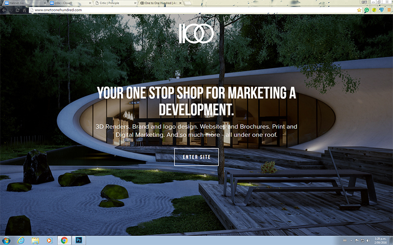
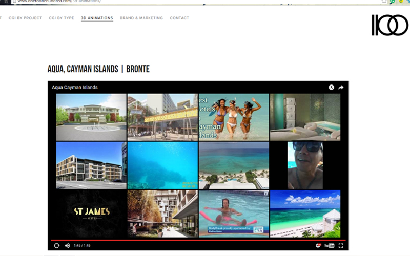
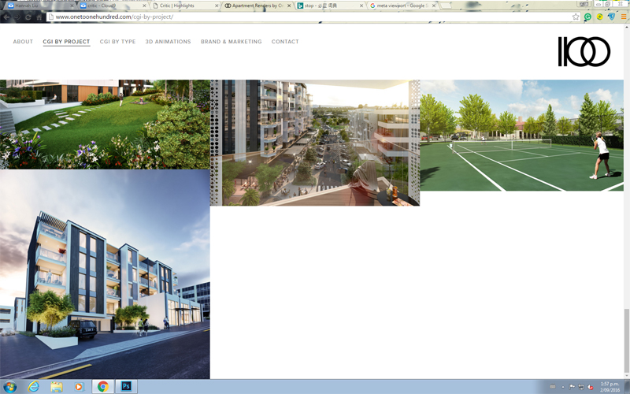
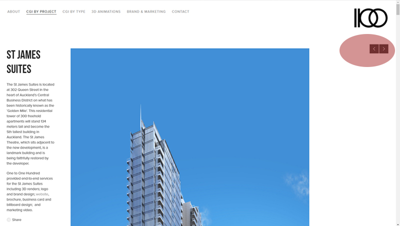

HIGHLIGHTS AND IMPROVEMENTS
1
Initial Page
The initial page of the website is quite unique. As shown in the image, it ocupies the whole page. Instead of communicating information, it communicates a feeling. It shows the company's ability to create a 3D world out of a 2D media.
2
Automatic Stop of Video Play
The Animation page listed quite a few videos. If users play them all at once, it can be quite massy. It is not unusual for users could lose their interest for one video and just start playing another one. So the website is build in a way when users start playing a second video, the first one would stop playing automaticly.
3
Adaptability
The website is super adaptive. As analyzed in the Design page (under layout tab), the website adapts it self for a wide range of devices. And at the same time utilize the space to show the best quality of their work. It uses the viewport meta tag, a css frame work and moniters resize events to ajust its display. The website itself is not complicated from the users point of view. But it is super smart. A lot is going on backstage to deliver this complicated behaviour.
4
Return to Preview Image
One improvement the website should consider is to return to the preview image when the vedio has fully played and stopped. As shown in the image, when the video stops, Youtube default settings stays their and it could be a bit annoying.
5
Image arrangements
As shown in the image below, in the project page, when users scroll to the bottom of the page, they see a awkward blank space. Since the images have different height, which is fine and interesting in other parts of the page, but at the bottom it causes a bit trouble. The pictures should be rearranged to cover the blank space or put in more thoughts to cover this space with other elements.
6
Method of Loading
When users open the page or try to open a project, all the images are load at the same time. It takes a long time to finish loading such big a mount of high quality images. It would be worth considering to load just enough images and load more when users explicitely requires them.
7
Project Navigation
The arrows (highlighted in red) that helps users to navigate to previous or next project is located on the far right of the page. This is due to the images having a maximum width setting. When the window is wide, the image stops expanding, and leave the arrows far away from the image. It would be better to place the arrows right next to the images for a better indication.
